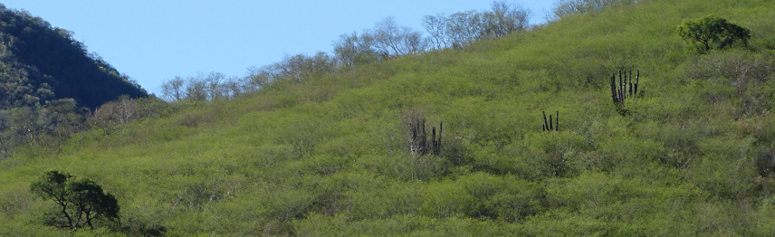

Bird Identification: Extensive experience identifying North American birds by sight and sound,
both Eastern (Ontario and Manitoba) and Western (Nevada and Arizona). Also considerable experience
in the Neotropics (Costa Rica and Ecuador).
Plant Identification: Extensive knowledge of woody and herbaceous pants throughout the Great Basin,
Mojave, and Sonoran Deserts. Strong knowledge of Ontario tree species and working knowledge of forbs and shrubs.
Fitness/Safety: Comfortable hiking long distances through difficult terrain (mountainous, boggy, or muddy),
in varying temperatures (>40C to below freezing) and adverse weather conditions. Have conducted fieldwork in such
conditions for up to 16 days without rest. Have worked safely in bear, mountain lion, and rattlesnake country.
Interpersonal Skills: Equally comfortable working alone, with a partner, or a small crew, often in above mentioned
difficult field conditions. Experienced working with the public in both in both outdoor guiding and classroom settings.
Navigation and Transportation: Capable of navigating the wilderness using GPS, map, and compass. Comfortable traveling
on foot, by 4WD vehicle on rocky mountainous roads, on water by canoe, or by helicopter.
Fleming College
University of Guelph
Natural Resource Solutions Inc.
- Conducted post-construction mortality monitoring at an operational wind farm
- Identified and processed dead birds and bats safely and effectively
Beacon Environmental
- Surveyed and mapped breeding birds present on sites up to 92 ha in size, paying particular attention to species at risk
- Coordinated with project managers and landowners to schedule surveys
Birds Canada
- Identified and tagged all birds detected by song and call during 3-10 minute audio recordings using Wildtrax software
- Proofed transcriptions of other users
Great Basin Bird Observatory
- Conducted 1400 distance-based point counts in desert, riparian, and montane ecosystems
- Conducted rapid angle-order and intensive point-intercept vegetation surveys of both woody and herbaceous plants
- Searched for nests and mapped the territories of all species present during the season on a 20 hectare plot
- Worked at night surveying lagomorphs and other nocturnal mammals by spotlight
- Trained incoming crew members on survey protocols, bird and plant identification
Great Basin Bird Observatory
- Set up and maintained 5 small mammal trap lines in pinyon-juniper habitat
- Safely processed, identified, marked, and released over 500 rodents of 8 species
Great Basin Bird Observatory
- Set up and maintained 5 small mammal trap lines in pinyon-juniper habitat
- Safely processed, identified, marked, and released over 500 rodents of 8 species
Trent University
- Re-sighted coloured leg flags on Red Knots and other species
- Conducted daily surveys shorebird surveys, identifying and aging all individuals present
- Assisted with benthic invertebrate sampling
Bird Conservancy of the Rockies
- Conducted 100 broadcast surveys for Mexican Spotted Owls, recorded and mapped all owl species detected
- Deployed and collected Automated Recording Units at study sites
Manitoba Breeding Bird Atlas/Birds Canada
- Conducted over 1110 avian point counts in boreal and parkland ecosystems
- Looked for breeding confirmation of all species possible, both on survey or incidentally
Birds Canada
- Mapped territories and searched for nests on over 20 Golden-winged Warbler territories
- Mist-netted and colour banded territorial males and nesting females
- Surveyed vegetation at over 50 plots both at nest sites and random points on
Bolita Rainforest Hostel
- Led hostel guests on both days and night hikes to observe birds and other wildlife
- Surveyed the property daily to monitor bird species present and add data to the property’s eBird Hotspot
- Collected information on and photos of wildlife and wildlife viewing to be used promoting the hostel
Monteverde Butterfly Gardens
- Lead enthusiastic and engaging interpretive tours of our captive insect collection and 4 butterfly gardens to groups of 1-15 tourists
- Assisted in the maintenance of the gardens, greenhouses, and other facilities
Thunder Cape Bird Observatory
- Conducted daily visible migration watch of land and waterbirds
- Banded and/or processed over 300 birds of 40 species
- Carefully captured and extracted birds via mist nets, Heligoland, ground, and J traps
Canadian Wildlife Service
- Same duties as above, but only volunteering for half the season
University of Guelph Wildlife Club
- Organized and conducted 10 weekly 1.5 hour workshops on auditory bird identification
- Instructed over 30 beginner birders on the identification of 170 north-eastern species by ear in a classroom setting
Outdoor Education Department, Durham District School Board
- Led groups of up to 25 high school students on birding hikes
- Helped the participants spot and identify birds and other wildlife
- Educated students on the natural history of the wildlife we encountered
Long Point Bird Observatory, Birds Canada
- Erected and maintained an array of 13 mist nets
- Banded and processed over 140 birds carefully and efficiently
- Conducted a standard daily census’ of all birds in the field station area and tabulated the data in the daily report
Durham College
- Educated 9-12 beginner birders on skills of bird identification in a classroom setting
- Organized and co-presented a lesson on bird identification by ear
- Co-lead outdoor field trips and assisted students in applying bird identification skills in the field